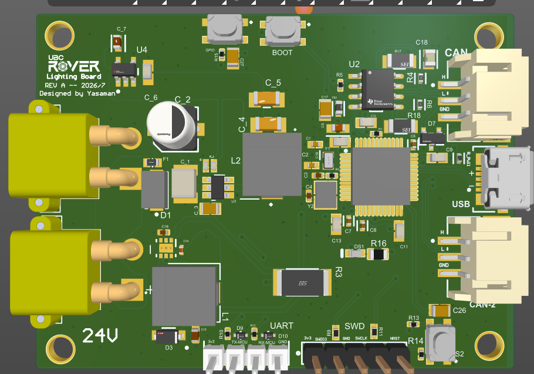
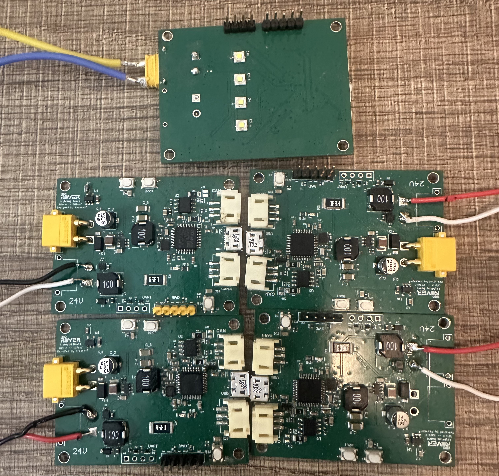
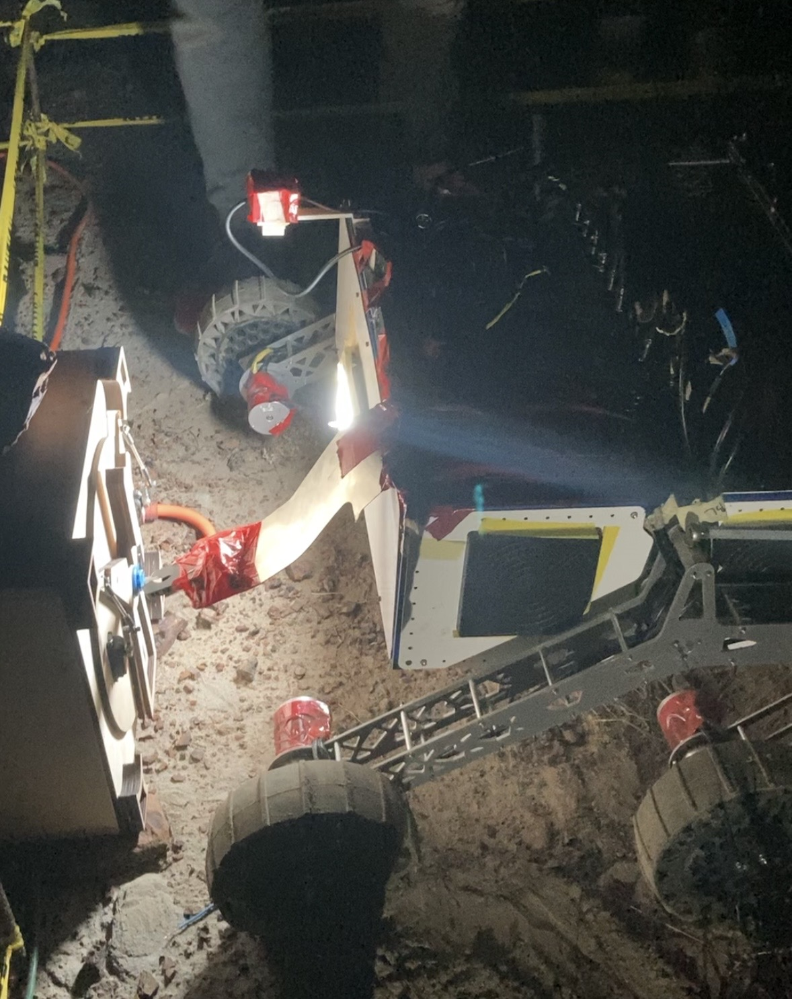

Embedded Hardware | PCB Design
Completed
Rover Lighting Control System
I designed a 4-layer lighting controller for a rover electrical system. I integrated the power stage, STM32, CAN interface, LED driver and protection, then wrote the firmware, assembled five boards, and tested CAN/PWM operation before rover integration.
4-layer
PCB
21 to 29.4 V
input
5
boards assembled
STM32
control


